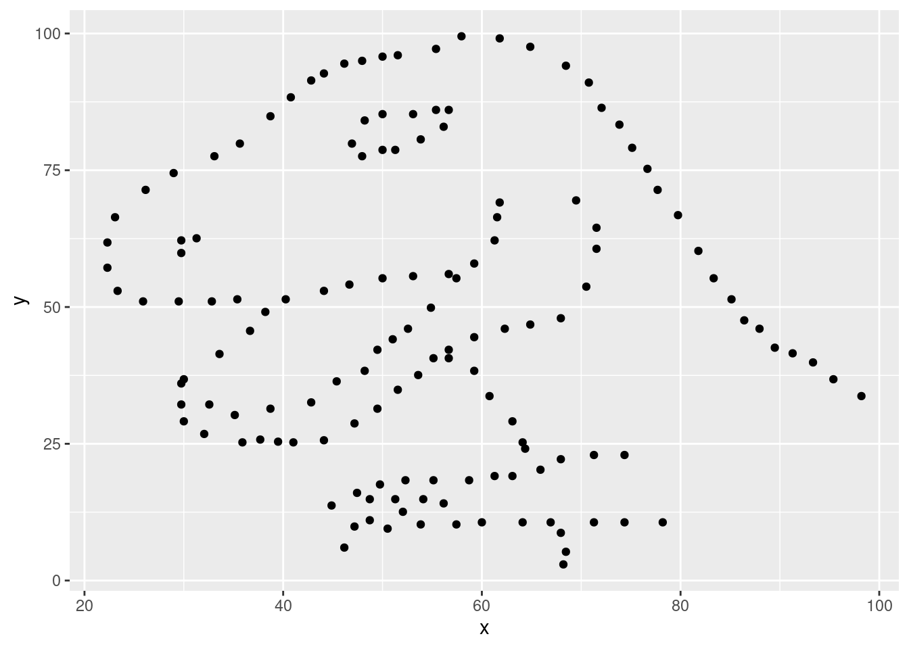
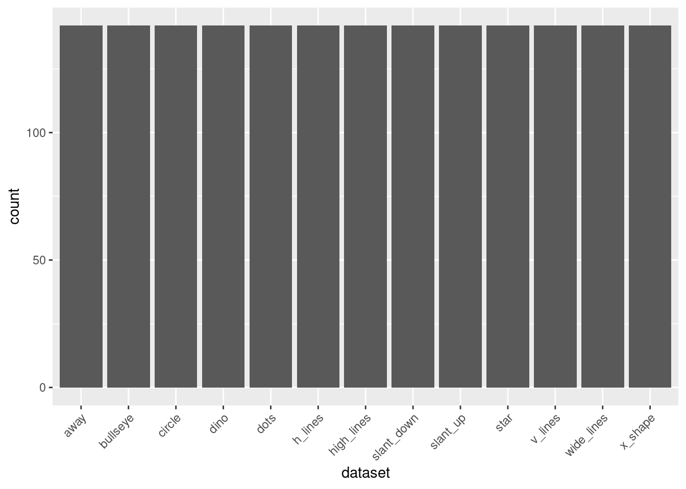
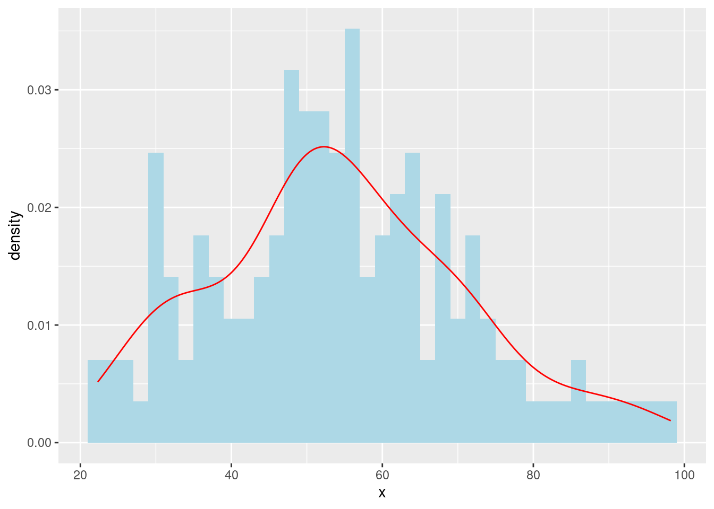
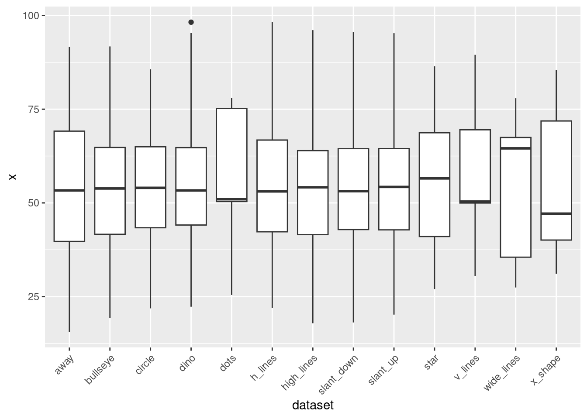
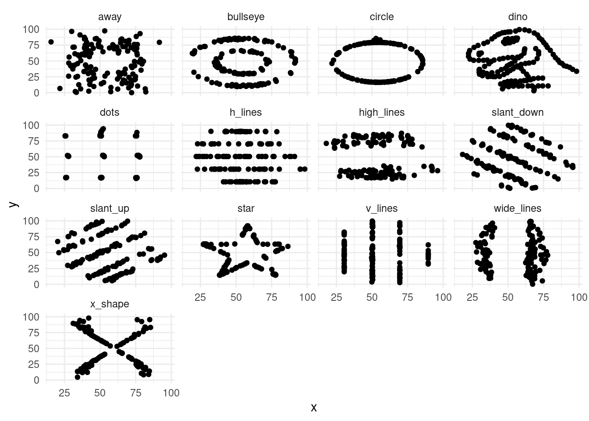
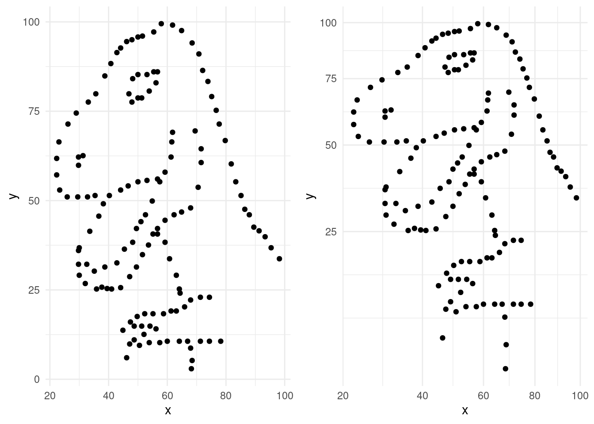

10 Class Activity 4
10.1 Your turn 1
This worksheet will guide you through creating various plots using the ggplot2 package in R. We will be using the datasaurus_dozen dataset from the datasauRus package for demonstration purposes. The dataset contains 13 different datasets, and we’ll use them to create a variety of plots.
10.1.1 Scatterplot
- Run the following code.
ggplot(data = dino_data, mapping = aes(x = x, y = y)) +
geom_point()
- You must remember to put the aesthetic mappings in the
aes()function! What happens if you forget?
Click for answer
Answer:
If you forget to put the aesthetic mappings inside the aes() function, ggplot2 will not be able to map the variables to the aesthetics correctly, and you might encounter an error or unexpected behavior in your plot.
# Add a layer and see what happens
ggplot(data = dino_data , x = x , y = y)
- The aesthetic mappings can be specified in the geom layer if you prefer, instead of the main
ggplot()call. Give it a try:
Click for answer
Answer:
# Rebuild the scatterplot with your aesthetic mapping in the geom layer
ggplot(data = dino_data) +
geom_point(aes(x = x, y = y)) 
10.1.2 Bar Plot
In this problem, we’ll explore creating a bar plot using the datasaurus_dozen dataset.
- Create a new data frame containing the count of observations in each dataset.
Click for answer
Answer:
- Create a bar plot showing the number of observations in each dataset.
Click for answer
Answer:
ggplot(data = dataset_counts, aes(x = dataset, y = count)) +
geom_bar(stat = "identity") +
theme(axis.text.x = element_text(angle = 45, hjust = 1)) 
10.1.3 Histogram
- Create a histogram of the
xvariable for thedinodataset.
- Overlay a density curve on the histogram.
Click for answer
Answer:
ggplot(data = dino_data, aes(x = x)) +
geom_histogram(aes(y = after_stat(density)), binwidth = 2, fill = "lightblue") +
geom_density(color = "red")
10.1.4 Boxplot
- Create a boxplot of the x variable for each dataset in datasaurus_dozen.
Click for answer
Answer:
ggplot(data = datasaurus_dozen, aes(x = dataset, y = x)) +
geom_boxplot() +
theme(axis.text.x = element_text(angle = 45, hjust = 1))
10.1.5 Faceting
Click for answer
Answer:
- Create a scatterplot of
xvs.yfor each dataset indatasaurus_dozenusingfacet_wrap().
ggplot(data = datasaurus_dozen, aes(x = x, y = y)) +
geom_point() +
facet_wrap(~ dataset) +
theme_minimal()
10.1.6 Variable Transformation
- The scatterplot of the
dinodataset without any transformations is given below.
Click for answer
Answer:
ggplot(data = dino_data, aes(x = x, y = y)) +
geom_point() +
theme_minimal() -> p1- Now, apply the square root transformation to both the
xandyaxes using thescale_x_sqrt()andscale_y_sqrt()functions in thedinodataset.
Click for answer
Answer:
ggplot(data = dino_data, aes(x = x, y = y)) +
geom_point() +
scale_x_sqrt() +
scale_y_sqrt() +
theme_minimal() -> p2- Finally, use
grid.arrange()function fromgridExtrapackage to plot the above two plots side-by-side. Which plot do you prefer and why?
Click for answer
Answer: The second plot is more revealing of a dinosaur than the first plot.
library(gridExtra)
grid.arrange(p1, p2, nrow = 1)